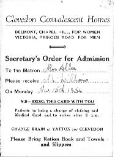
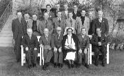
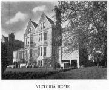
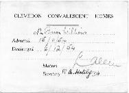

A letter from MargateI was very pleased to receive a letter from Cyril Plater this morning after writing to Fred the Barber last week. He wrote:— Flat 2, 107 Dane Road, Margate, Kent |
|
{"indent" on} {"indent" off} |
To Clevedon to convalesceI was up at 7.30 this morning, and out by 8.30am. It was very foggy, and the ’bus took almost an hour to get into town. I like travelling, perhaps because one meets and sees so many people. On the bus I was sorry for a blind woman, amused by our driver who opened his cab door to swear at another motorist, and delighted when a pretty girl apologised for treading on my foot! Of course, I might easily have put my foot there purposely. In New Street I bought some Scarlet Quill stationery and some ink, then rushed off to Snow Hill, a suitcase in each hand. I had had a hard job packing and I had to sit on the suitcases to get them shut. I had horrible visions of a suitcase flying open in the town and scattering pants, vest, shirt and everything all over the street, but my fears were unfounded. There was a small queue at the Booking Office and I thought I might miss the train, but had ten minutes to spare. The fare to Clevedon was £1 10s 8d. Obviously, not many people travel this way — my ticket was a GWR one and the fare marked at 21/9d. The train was the Cornishman, headed by No.5045 Earl of Dudley (Surely I’ve been pulled by this before?). We left at 9.52am, two minutes late, and at Acocks Green Station we stopped for 15 minutes. In the thick fog the train was running several minutes late, but after we had gone through Stratford and the Cotswolds, the fog gave way to beautiful sunshine. I had two companions on the train. One looked at least a Russian Spy. He had thick greying hair which stood out from his head, a moustache, and an accent I could not identify. He also kept talking to himself all the time. But he was quite a nice fellow because he gave me some chocolate biscuits. 11.30am Bristol, and as filthy a fog as I have ever seen. The connection train was waiting on the other side of the platform. It was not a long journey to Yatton where I caught the third train to Clevedon. This latter part of the journey took less than 10 minutes. Outside the station, it did not take me long to find Princes Road and the Victoria Home. The matron took me in and later I was taken into the Conservatory and introduced. The Captain is Jock, a Scotsman. We had a few sandwiches, then as tea wasn’t till 4.0pm I went out for a walk. From the station I went along Old Church Road, past the quarried Hangstone Hill, to the beach. Here I sat and finished the letter to Helen I had been writing on the train, watched by a friendly robin who brushed my hair twice. Down at the water’s edge, there was a number of screaming gulls. Clevedon gives me the impression of being the sort of place where people come to die. It has a population of about 8,000, and is a well spread out town built of local Pennant stone. The coastline is broken and rugged, and the beach is stony. Above the town is tree-clad Dial Hill, 296 feet high. Behind Clevedon lies the Gordano, an area of moor and hill from which rise the Mendips. The House is very comfortable. |


The residents, with Brian standing behind Matron Victoria House in Clevedon  |